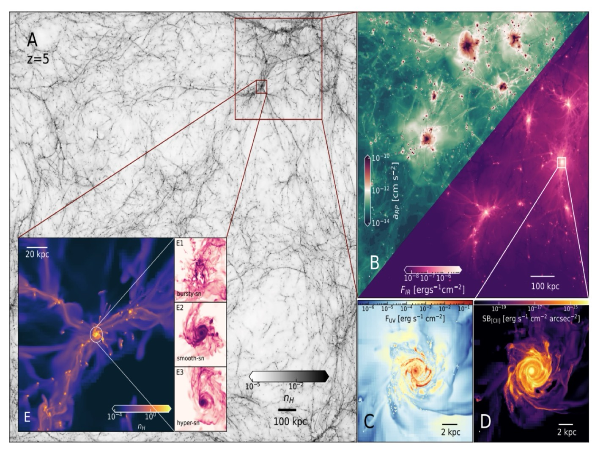
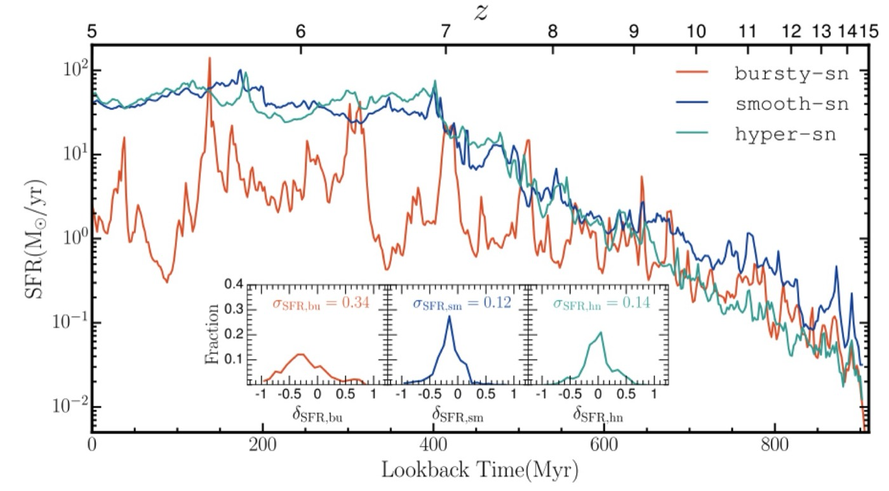
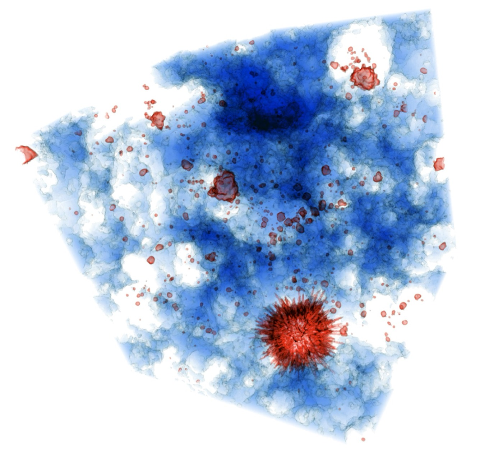
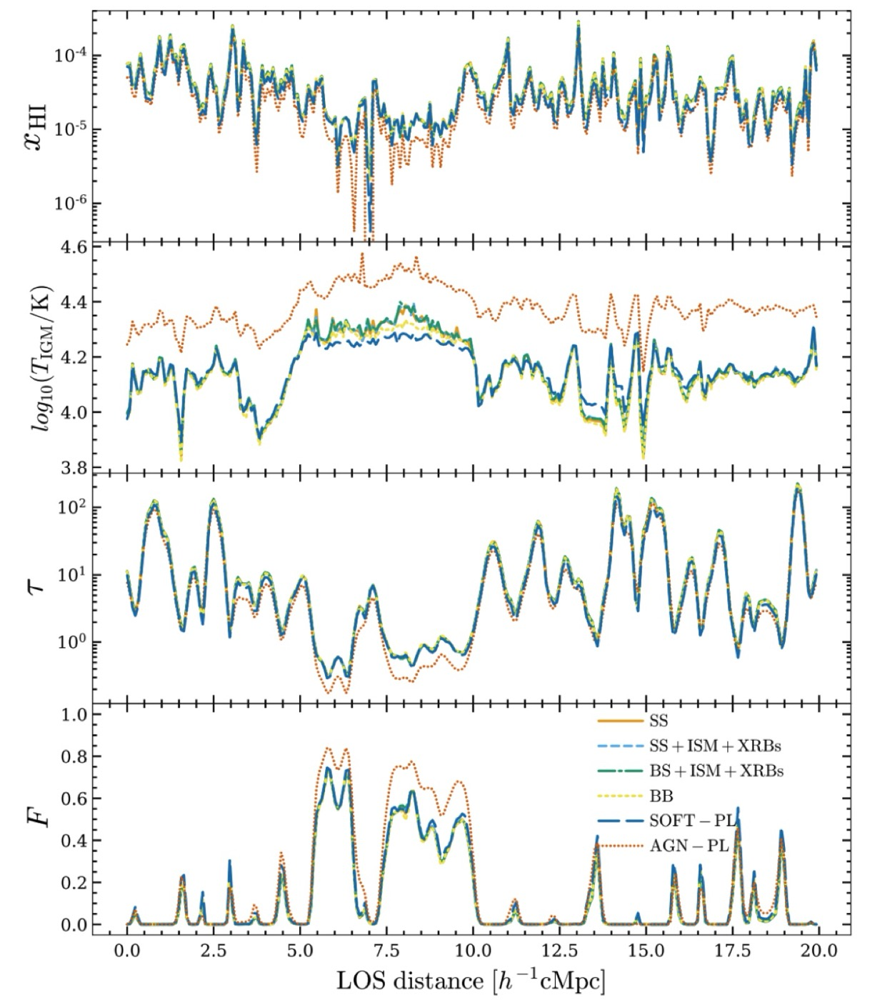
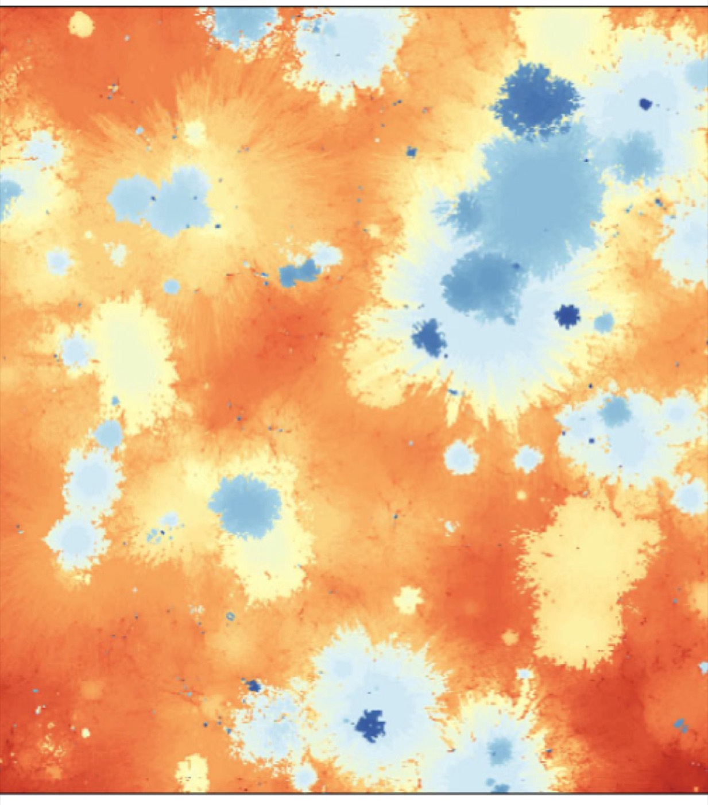

Broadly speaking, my academic passion lies in delving deeper into the intriguing realms of Early-Universe Astrophysics and Cosmology. At the core of my research endeavors is a profound interest in unraveling the mysteries surrounding the Intergalactic Medium and the properties of galaxies. Specifically, I am intrigued by the prospect of investigating these cosmic phenomena through the correlation of various probes.
01
Mock Observations for Current Telescope Data
I am developing a pipeline to create realistic mock observations from cosmological radiation-hydrodynamic simulations, currently focusing on the SPHINX simulations. The goal is to turn the physical properties of simulated galaxies—such as gas density, temperature, metallicity, ionization, and radiation—into synthetic observations that can be directly compared with real telescope data, particularly from JWST.
The pipeline produces mock images and spectra while including realistic observational effects such as instrumental resolution, detector noise, dust attenuation, and survey selection effects. This allows us to analyse simulated galaxies in much the same way as observed galaxies. These mock observations provide a bridge between simulations and observations. They help us test observational methods, understand possible measurement biases, and predict which physical features of galaxies can be detected with current and future telescopes.
Image adapted from Katz et al. 2023.
02
Galaxy Formation, Stellar Feedback and Bursty Star Formation
Understanding how galaxies assemble their stellar mass requires studying the complex interplay between gas accretion, star formation, and feedback processes. My work investigates the physical mechanisms that regulate galaxy formation in cosmological environments, with particular emphasis on the role of stellar feedback in shaping the interstellar medium and controlling star formation.
Supernova explosions and stellar radiation inject energy and momentum into the surrounding gas, driving outflows, redistributing baryons, and regulating the efficiency with which galaxies convert gas into stars. These feedback processes are crucial for determining the structure of galaxies and their evolution across cosmic time.
Using high-resolution cosmological simulations (SPICE), I explore how different feedback mechanisms influence star formation, gas dynamics, and the observable properties of galaxies. In particular, I study how stellar feedback shapes the rest-frame ultraviolet luminosity function (UV LF) of galaxies in the early Universe, which provides a key observational constraint on galaxy formation during the first billion years of cosmic history.

The SPICE simulation, from the cosmic web to a single galaxy. Image taken from Bhagwat+2024.

Star formation histories under bursty, smooth and hyper supernova feedback. Image taken from Basu+2026.
03
Sources of Cosmic Reionization
Understanding the sources that drove cosmic reionization is essential for explaining how the intergalactic medium transitioned from neutral to ionized in the early Universe. I investigate the astrophysical populations responsible for producing the ionizing photon budget, focusing primarily on early galaxies and quasars.
My work explores how the physical properties of these sources, such as star formation regulated by supernova-driven feedback, ionizing photon escape fractions, and the evolution of galaxy and quasar luminosity functions, determine their contribution to the Epoch of Reionization and the later Helium Epoch of Reionization. I also study additional ionization and heating mechanisms, including X-ray binaries and shock-heated interstellar gas, that can influence the thermal and ionization state of the intergalactic medium.

Image taken from Eide+2020.
04
Intergalactic Medium and the Lyman-α Forest
My research explores the structure and physical state of the intergalactic medium (IGM), the diffuse gas that fills the space between galaxies. One of the most powerful probes of this medium is the Lyman-α forest, an array of absorption lines seen in quasar spectra caused by intervening hydrogen gas along the line of sight. By analyzing these absorption features, it is possible to map the distribution and properties of gas in the large-scale cosmic web.
Through comparisons between simulations and observations, I study the density, temperature, and ionization state of the IGM and its evolution across cosmic time. The Lyman-α forest provides insight into the growth of large-scale structure, the thermal history of the Universe, and the connection between galaxies and the surrounding cosmic environment.

Image taken from Basu+2025.
05
Helium (II to III) Reionization
I study the epoch of helium reionization, when singly ionized helium in the intergalactic medium became fully ionized due to energetic radiation from quasars. This process occurred later than hydrogen reionization and had a profound impact on the thermal evolution of the intergalactic gas.
By combining cosmological simulations with observations of high-redshift quasars, I investigate the timing, duration, and spatial structure of helium reionization. This work provides insight into the role of quasars in shaping the ionization state of the Universe and helps explain observable signatures such as temperature fluctuations and absorption features in the He II Lyman-α forest. The project is further expanded to explore other probes (i.e. 3He+ transition line, FRBs, 3.5 cm forest and temperature fluctuations) to have more insight about this epoch.

Image taken from Basu+2024.
06
CV, Thesis & Poster
For more details of my research trajectory, have a look at these.